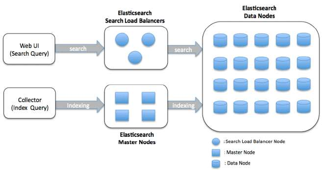
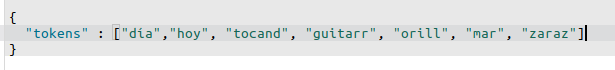
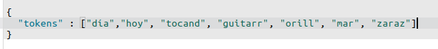

Introducción a Elasticsearch ( y un poquito mas alla )
Introducción a Elasticsearch ( y un poquito mas alla )
Vision general
Demo
Es un motor de busquedas full text y analizador de datos, open source y altamente escalable
Está construido sobre Apache Lucene ( fue el primer motor de busqueda full text mas popular del mercado)
Desarrollado en Java
La primera version salio en febrero del 2010
En el fondo es un indice invertido
Elasticsearch está construido para escalar facilmente.
En el momento que se necesite mas capacidad simplemente hay que añadir un nodo más, lo demas se acomoda solo
Para que Elasticsearch ???
Para que Elasticsearch ???
Full Text Search
Suggester and did you mean
Graph query (Cross selling)
Obtener estadisticas sobre los documentos
Elastic Stack
Arquitectura
Cluster
Node
Index
Shard y Replicas
Cluster:
Un cluster es un conjunto de uno o más nodos que mantienen toda la información de
manera distribuida e
indexada.
Cada cluster está identificado por un nombre, por defecto se llaman “elasticsearch”
Nodo:
Un nodo es una instancia de Elastic que forma parte de un cluster, almacena tu
información y ayuda
con las tareas de indexación y búsqueda del cluster.
Los nodos están identificados por un nombre también.
Puede haber tantos nodos como quieras por cada Cluster, en caso de que no haya ningún Cluster configurado en el
momento de creación este lo creará y se unirá a él.
Indice:
Un Index es una colección de documentos que tienen características similares pero el indice en si no almacena los documentos, Cada índice está compuesto por uno o más shards.

Sharding y Replicas:
Cada shard es una instancia de un índice de Lucene, que podría imaginarse como un
motor de búsqueda en sí mismo, que indexa y administra consultas para un subconjunto de datos en un cluster de
Elasticsearch.
Cada replica es un copia exacta de un indice y los shards replicas no pueden habitar en el mismo nodo de su shard originador
Shards
Replicas
Analysis
Mapping

Un Character filter recibe el texto original como una secuencia de caracteres y puede transformar la secuencia agregando, eliminando o cambiando caracteres. Por ejemplo, un filtro de caracteres se podría usar para convertir números árabe-hindúes (٠ ١٢٣٤٥٦٧٨ ٩) en sus equivalentes árabe-latinos (0123456789), o para eliminar elementos HTML como de la secuencia..
No es necesario
Un tokenizer recibe un flujo de caracteres, lo divide en tokens individuales, generalmente palabras individuales
debe haber al menos un tokenizer
Acepta los tokens devueltos por el tokenizer y aplica determinada transformaciones sobre cada uno
Por ej: pasar todo a minuscula, hallar la raiz de las palabras (Stemming) o remover las stopwords entre otras
muchas opciones
No necesariamente se debe agregar un token filter
 

El mapeo es el proceso de definir cómo un documento, y los campos que contiene, se almacenan e indexan
Por ejemplo:
match query
match_phrase query
multi_match query
query_string query
contant_score query
bool query
dis_max query
function_score query
geo query
Joinning query